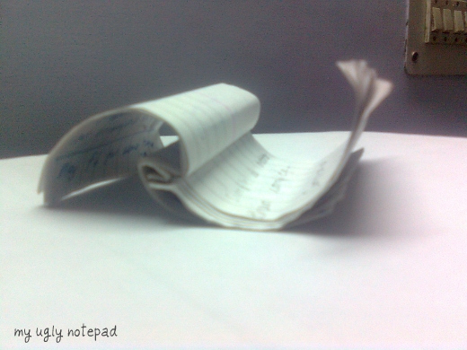

I have a small ugly notepad, which I use to scribble anything that's important. But on March 22 .10, it
witnessed an event that's pretty ! important in my personal history. Belive it or not, I deactivated
facebook and my twitter, where I had 17 genuine followers and closed my youtube channel. I decided to sink "OFF-SOCIAL".
The reason was very superheroish. I dreamt thought that I was born to change the world, web, and for the process of Brain-Storming
to take off, I needed total peace and hell no tweets.

I don't do anything for absolutely no reason. There are some serious thoughts behind these severe steps.
- It's pretty human, to think the way you see stuff. For instance, if I see my friend's girlfriend, I start thinking of mine. Similarly, if you are a web developer (like me), then its you profession's demand to think, think, and think even harder about something no one can dream of dreaming. We always try to develop something new. And if we have updates and wallposts on our mind, then we won't be able to innovate.
- That's it.
Addiction is bad, usage isn't. I do have a facebook account, which I use to keep in touch with my peeps, and friends. I use a stopwatch to restrict my facebook usage,
you may find your own ways, or use mine. And by the way, here's what a friend of mine recently posted :